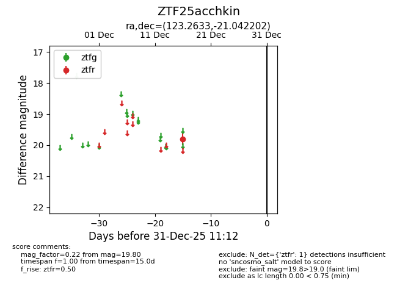
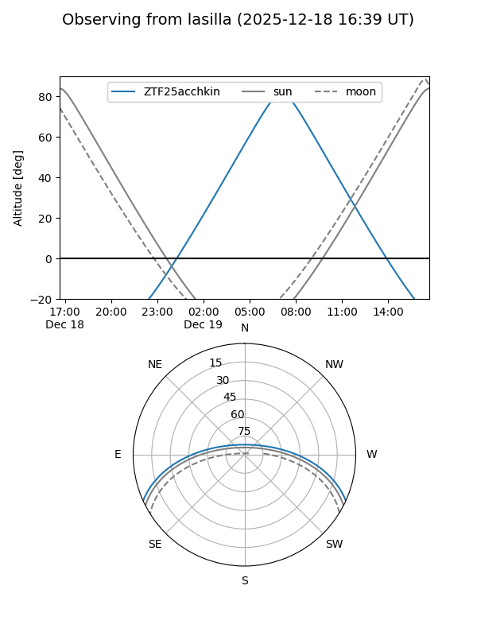
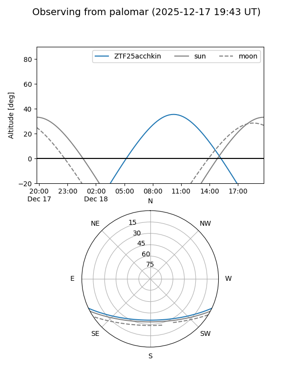

ZTF25acchkin
Target ZTF25acchkin at 2025-12-18 11:18
Aliases and brokers:
FINK: fink-portal.org/ZTF25acchkin
Lasair: lasair-ztf.lsst.ac.uk/objects/ZTF25acchkin
ALeRCE: alerce.online/object/ZTF25acchkin
alt names
ZTF25acchkin (ztf,fink_ztf)
Coordinates:
equatorial (ra, dec) = 123.2633,-21.04220
equatorial (HMS+DMS) = 08:13:03.20,-21:02:31.93
galactic (l, b) = (241.0752,+7.23082)
Photometry
last ztfr=19.80
1 ztfr detections
Lightcurve

Visibility


Additional plots